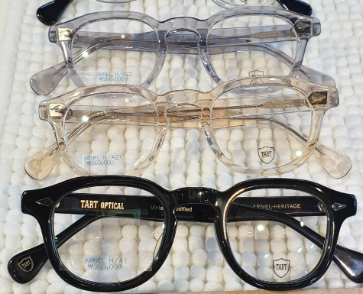

당신에게 어울리는 안경은...
"두꺼운 뿔테안경"

최근에 인기를 얻고있는 뿔테안경!
두꺼운 뿔테안경은 얼굴형이 각진, 눈썹이 적은 분들
그리고 눈과 눈썹 사이 거리가 기신 분들
또는 쌍꺼풀이 없으신 분들에게 추천드려요!!
뿔테안경의 두꺼운 뿔테는 적은 눈썹을 채워주어 희미한 눈썹을 보완해준답니다.
또한, 뿔테안경으로 시선이 집중되기 때문에 얼굴형이 덜 부각되는 효과가 있어요.
눈과 눈썹 사이의 거리가 기신 분들은 두꺼운 뿔테로 거리를 좁혀주는게 좋아요!
이태리안경원(ITALY 1980)의 '타르트 아넬' 뿔테안경은
무심하면서 시크한 분위기를 연출해준답니다.
블랙 색상 외에도 다양한 색상이 준비되어있으니 다양한 분위기를 연출해 보세요~
이 안경 사고싶다면?